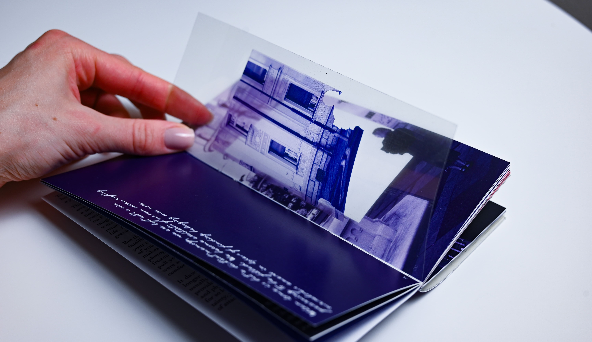
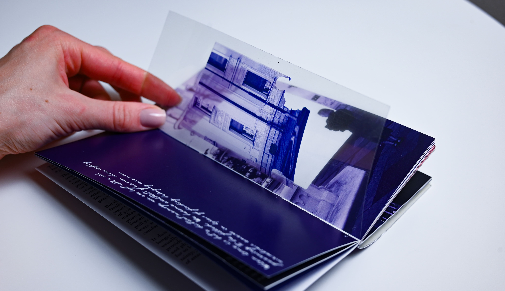
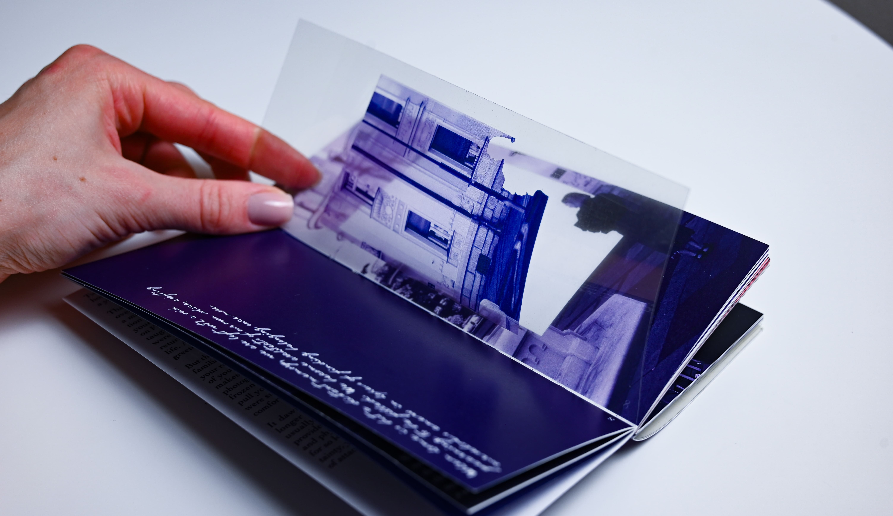

Solace is a self-published artist book that explores the idea of home not as a physical place, but as an internal state of safety, freedom, and self-defined rhythm. Through original writing, photography, and editorial design, the book reflects on themes of belonging, transience, and emotional grounding.
The design employs a restrained duotone palette and minimal layout system, using negative space and visual pacing to evoke quiet introspection. Every detail — from the page sequence to the binding — was considered as part of the emotional architecture of the book, turning the reading experience into a meditative, tactile encounter.
